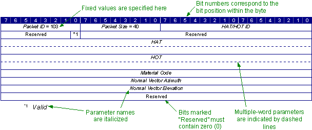
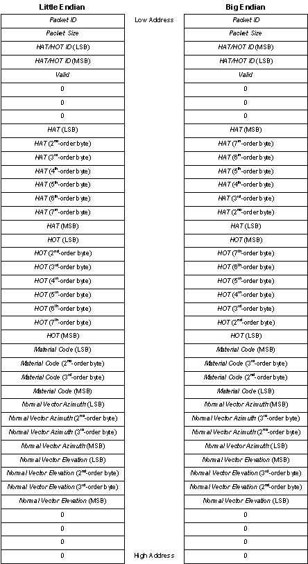

<!DOCTYPE HTML PUBLIC "-//IETF//DTD HTML//EN">
<HTML>
<HEAD>
<meta name="GENERATOR" content="Microsoft FrontPage 4.0">
<Title>Data Packet Reference</Title>
<link rel="stylesheet" type="text/css" href="../style.css">
</HEAD>
<BODY>
<!--webbot bot="Include" U-Include="../Header.htm" TAG="BODY" startspan -->

<table border="0" width="100%" bgcolor="#0038A8" bordercolorlight="#0038A8" bordercolor="#0038A8" bordercolordark="#0038A8" cellspacing="1">
  <tr>
    <td width="100%" bgcolor="#0038A8" valign="middle" bordercolor="#0038A8" bordercolorlight="#0038A8" bordercolordark="#0038A8">
      <p style="margin-left: 5"><i><font color="#FFFFFF"><b>CIGI Host Emulator </b></font></i>
      <font color="#FFFFFF"><b><i>3</i></b></font></td>
    <td width="100%" bgcolor="#0038A8" valign="middle" bordercolor="#0038A8" bordercolorlight="#0038A8" bordercolordark="#0038A8" align="right"></td>
  </tr>
</table>

<!--webbot bot="Include" endspan i-checksum="6605" -->

<h2>Data Packet Reference</h2>
<blockquote>
  <p ALIGN="LEFT">This portion of the ICD describes each packet in the Common
  Image Generator Interface. The packets are organized as follows:</p>
  <ul>
    <li>
      <p ALIGN="LEFT">Host-to-IG Packets
      <ul>
        <li>
          <p ALIGN="LEFT"><a href="IG%20Control.htm">IG Control</a></li>
      </ul>
    </li>
    <li>
      <p align="left">IG-to-Host Packets
      <ul>
        <li>
          <p align="left">Start of Frame</li>
      </ul>
    </li>
  </ul>
  <p>Each topic contains one or more paragraphs describing the use of the
  packet. Following this text is a diagram illustrating the structure of the
  packet. An example of such a diagram is shown below:</p>
  <p align="center"></p>
  <p align="center"><b>Example of Packet Structure Diagram</b></p>
  <p ALIGN="LEFT">Each row represents a 32-bit word. The topmost row corresponds
  to the first word in the packet; the memory address increases downward. 64-bit
  parameters are indicated by a dotted line representing the enclosed word
  boundary. The parameter name appears in the first of the two rows.</p>
  <p ALIGN="LEFT">Parameter names are italicized. Parameters whose names will
  not fit within the space allotted in the table are noted below the diagram.
  Bits marked &quot;Reserved&quot; are allocated for future use and must be
  populated with zeros (0).</p>
  <p ALIGN="LEFT">Bit positions are numbered from right to left. The leftmost
  bit in each byte is the most significant bit. The leftmost byte in each word
  has the lowest physical address.</p>
  <p>The following illustration shows how the above packet would be stored in
  memory on both a big-endian and a little-endian computer:</p>
  <p align="center"></p>
  <p align="center"><b>Example of Data Packet Storage</b></p>
  <p ALIGN="LEFT">Below the packet structure diagram is a table that lists each
  parameter and describes its use. This table identifies the parameter’s name,
  data type, and unit of measure. If a parameter’s range of acceptable values
  differs from the domain of the <a href="Integral%20Types.htm">integral data type</a>,
  those values are listed next. If applicable, a default value and reference
  datum are also listed.</p>
  <p>The following table describes the general format of a packet parameter
  definitions table:</p>
  <p align="center"><b>Format of Packet Parameter Definitions Table</b></p>
  <div align="center">
    <center>
    <table border="1" cellspacing="0" cellpadding="0" style="border-collapse:collapse;
 border:none;mso-border-alt:solid navy 1.0pt;mso-padding-alt:0in 5.4pt 0in 5.4pt">
      <thead>
        <tr style="height:14.75pt">
          <td width="343" style="width:257.4pt;border:solid navy 1.0pt;border-right:
   solid white 1.0pt;background:navy;padding:0in 5.4pt 0in 5.4pt;height:14.75pt">
            <p class="MsoNormal" style="page-break-after:avoid"><font color="#FFFFFF"><b>Parameter<o:p>
            </o:p>
            </b></font></p>
          </td>
          <td width="343" style="width:257.4pt;border:solid navy 1.0pt;border-left:none;
   mso-border-left-alt:solid white 1.0pt;background:navy;padding:0in 5.4pt 0in 5.4pt;
   height:14.75pt">
            <p class="NormalBold" style="margin-bottom:0in;margin-bottom:.0001pt;
   page-break-after:avoid"><span style="mso-bidi-font-weight:bold"><font color="#FFFFFF"><b>Description<o:p>
            </o:p>
            </b></font></span></p>
          </td>
        </tr>
      </thead>
      <tr>
        <td width="343" valign="top" style="width:257.4pt;border:solid navy 1.0pt;
  border-top:none;mso-border-top-alt:solid navy 1.0pt;padding:0in 5.4pt 0in 5.4pt">
          <p class="MsoBodyText" style="tab-stops:45.0pt 1.25in"><b><i>Packet ID</i><o:p>
          </o:p>
          </b></p>
          <p class="MsoBodyText" style="tab-stops:45.0pt 1.25in">Type:<span style="mso-tab-count:1">&nbsp;&nbsp;&nbsp;&nbsp;&nbsp;&nbsp;
          </span>unsigned int8<o:p>
          </o:p>
          </p>
          <p class="MsoBodyText" style="tab-stops:45.0pt 1.25in">Units:<span style="mso-tab-count:1">&nbsp;&nbsp;&nbsp;&nbsp;&nbsp;&nbsp;
          </span>N/A<o:p>
          </o:p>
          </p>
          <p class="MsoBodyText" style="tab-stops:45.0pt 1.25in">Value:<span style="mso-tab-count:1">&nbsp;&nbsp;&nbsp;&nbsp;&nbsp;
          </span>103<o:p>
          </o:p>
          </p>
        </td>
        <td width="343" valign="top" style="width:257.4pt;border-top:none;border-left:
  none;border-bottom:solid navy 1.0pt;border-right:solid navy 1.0pt;mso-border-top-alt:
  solid navy 1.0pt;mso-border-left-alt:solid navy 1.0pt;padding:0in 5.4pt 0in 5.4pt">
          <p class="MsoBodyText">This parameter specifies the packet’s opcode,
          which uniquely identifies the packet. In this example, the value 103
          indicates that this is a <b>HAT/HOT Extended Response</b> packet. This
          is a dimensionless value.<o:p>
          </o:p>
          </p>
        </td>
      </tr>
      <tr>
        <td width="343" valign="top" style="width:257.4pt;border:solid navy 1.0pt;
  border-top:none;mso-border-top-alt:solid navy 1.0pt;padding:0in 5.4pt 0in 5.4pt">
          <p class="MsoBodyText" style="tab-stops:45.0pt 1.25in"><b><i>Packet
          Size</i><o:p>
          </o:p>
          </b></p>
          <p class="MsoBodyText" style="tab-stops:45.0pt 1.25in">Type:<span style="mso-tab-count:1">&nbsp;&nbsp;&nbsp;&nbsp;&nbsp;&nbsp;
          </span>unsigned int8<o:p>
          </o:p>
          </p>
          <p class="MsoBodyText" style="tab-stops:45.0pt 1.25in">Units:<span style="mso-tab-count:1">&nbsp;&nbsp;&nbsp;&nbsp;&nbsp;&nbsp;
          </span>Bytes<o:p>
          </o:p>
          </p>
          <p class="MsoBodyText" style="tab-stops:45.0pt 1.25in">Value:<span style="mso-tab-count:1">&nbsp;&nbsp;&nbsp;&nbsp;&nbsp;
          </span>40<o:p>
          </o:p>
          </p>
        </td>
        <td width="343" valign="top" style="width:257.4pt;border-top:none;border-left:
  none;border-bottom:solid navy 1.0pt;border-right:solid navy 1.0pt;mso-border-top-alt:
  solid navy 1.0pt;mso-border-left-alt:solid navy 1.0pt;padding:0in 5.4pt 0in 5.4pt">
          <p class="MsoBodyText">This parameter indicates the number of bytes in
          this type of data packet. The value 40 in this example specifies the
          number of bytes in a <b>HAT/HOT Extended Response</b> packet.<o:p>
          </o:p>
          </p>
        </td>
      </tr>
      <tr>
        <td width="343" valign="top" style="width:257.4pt;border:solid navy 1.0pt;
  border-top:none;mso-border-top-alt:solid navy 1.0pt;padding:0in 5.4pt 0in 5.4pt">
          <p class="MsoBodyText" style="tab-stops:45.0pt 1.25in"><b><i>Parameter
          Name</i><o:p>
          </o:p>
          </b></p>
          <p class="MsoBodyText" style="tab-stops:45.0pt 1.25in">Type:<span style="mso-tab-count:1">&nbsp;&nbsp;&nbsp;&nbsp;&nbsp;&nbsp;
          </span>double float<o:p>
          </o:p>
          </p>
          <p class="MsoBodyText" style="tab-stops:45.0pt 1.25in">Units:<span style="mso-tab-count:1">&nbsp;&nbsp;&nbsp;&nbsp;&nbsp;&nbsp;
          </span>degrees<o:p>
          </o:p>
          </p>
          <p class="MsoBodyText" style="tab-stops:45.0pt 1.25in">Values:<span style="mso-tab-count:1">&nbsp;&nbsp;&nbsp;
          </span>-90.0 – 90.0<o:p>
          </o:p>
          </p>
          <p class="MsoBodyText" style="tab-stops:45.0pt 1.25in">Default:<span style="mso-tab-count:1">&nbsp;&nbsp;&nbsp;
          </span>0.0<o:p>
          </o:p>
          </p>
          <p class="MsoBodyText" style="tab-stops:45.0pt 1.25in">Datum:<span style="mso-tab-count:1">&nbsp;&nbsp;&nbsp;&nbsp;
          </span>Equator<o:p>
          </o:p>
          </p>
        </td>
        <td width="343" valign="top" style="width:257.4pt;border-top:none;border-left:
  none;border-bottom:solid navy 1.0pt;border-right:solid navy 1.0pt;mso-border-top-alt:
  solid navy 1.0pt;mso-border-left-alt:solid navy 1.0pt;padding:0in 5.4pt 0in 5.4pt">
          <p class="MsoBodyText">The remaining items in the table describe the
          rest of the packet’s parameters. There is one row per parameter, and
          the parameters are given in the order in which they appear in the
          packet (left to right).<o:p>
          </o:p>
          </p>
          <p class="MsoBodyText">The parameter is identified by the parameter
          name. Below this name is the data type. CIGI data types are described
          in the <!--[if supportFields]><span style='mso-element:
  field-end'></span><![endif]-->
          <a href="Data%20Types.htm">Data Types</a> topic.<o:p>
          </o:p>
          </p>
          <p class="MsoBodyText">Next is the unit of measure used for the
          parameter. If the parameter is dimensionless and has no unit, this is
          indicated by “N/A.”<o:p>
          </o:p>
          </p>
          <p class="MsoBodyText">The domain may be specified below the unit of
          measure. This might either be a range of values or an enumerated list
          of discrete values. If no values are specified, then the domain is the
          entire range of the data format as listed in the <!--[if supportFields]><span style='mso-element:
  field-begin'></span><span style="mso-spacerun: yes"> </span>REF _Ref34111921 <span
  style='mso-element:field-separator'></span><![endif]-->
          <!--[if supportFields]><span style='mso-element:field-end'></span><![endif]-->
          <a href="Integral%20Types.htm">Integral Types</a> topic.<o:p>
          </o:p>
          </p>
          <p class="MsoBodyText">Below the domain is default value, if
          applicable, for the parameter. This is the value assigned to the
          specified attribute during initialization of the IG. Attributes of
          entities and other objects that are instantiated at runtime will not
          have a default value.<o:p>
          </o:p>
          </p>
          <p class="MsoBodyText">Finally, a reference datum may be specified for
          the attribute. This is the point or state from which the value is
          measured.<o:p>
          </o:p>
          </p>
        </td>
      </tr>
    </table>
    </center>
  </div>
</blockquote>

<!--webbot bot="Include" U-Include="../Footer.htm" TAG="BODY" startspan -->

<hr noshade color="#0038A8">
<table border="0" width="100%">
  <tr>
    <td width="50%">
      <p class="copyright">© 2008 The Boeing Company</td>
    <td width="50%">
      <p align="right" class="copyright">rev 3.3.0</td>
  </tr>
</table>

<!--webbot bot="Include" endspan i-checksum="11837" -->

</BODY>
</HTML>
